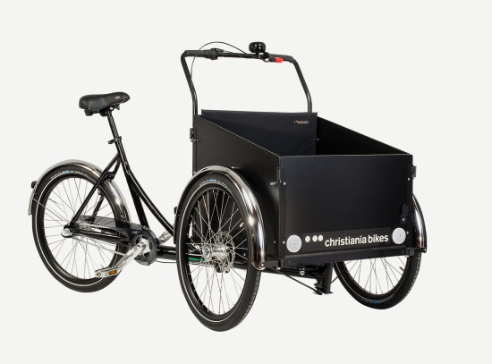
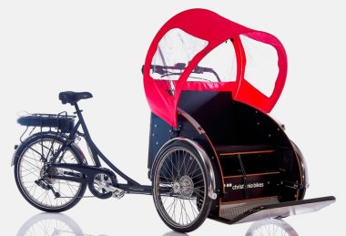

Home |
Produkte |
Über uns |
Kontakt |
Lastenräder
Wir bieten bei RUND UMS RAD auch verschiedene Lastenräder mit und ohne Box der Marke Christiania.
Ohne Box

Zuladung 100 Kg + Fahrer
christiania bike no Box - das Chassis für alle Aufbauten
Kistengröße Grundfläche des Rahmens: 88 x 62 cm (L x B)
Besonderheiten Individuelle Aufbauten möglich
Mit Box
Zuladung 100 Kg + Fahrer
Das christiania bike für Menschen, die nicht soviel Ladefläche benötigen.
Auch als Lastenrad für einen Hund super geeignet.
Kistengröße 63 x 62 x vorn 36, hinten 50cm (L x B x H)
Passagier
Zuladung 150 Kg + Fahrer
Die Fahrgäste sitzen vorn. Fahrer und Fahrgäste können sich mühelos unterhalten
Ein Dach mit Bügeln, welches klappbar und abnehmbar ist. Bei aufgespanntem Dach kann der Fahrer den hinteren Teil abzippen, um sich weiter mit den Passagieren unterhalten zu können
Als Pedelec läuft das Rad bis 25kmH, hat eine Anfahrhilfe bis 4 KmH, allerdings sollten ältere Menschen mit weniger KmH ausgefahren werden
eine Dreipunkt Gurtsystem in rot für jeden Passagier
Impressum
Semesteraufgabe
Renee Ariane Ortel – 2210413
Kurs INT, Hochschule Mannheim, SS 2022
Informationsquellen
siehe index
Bildquellen
siehe index